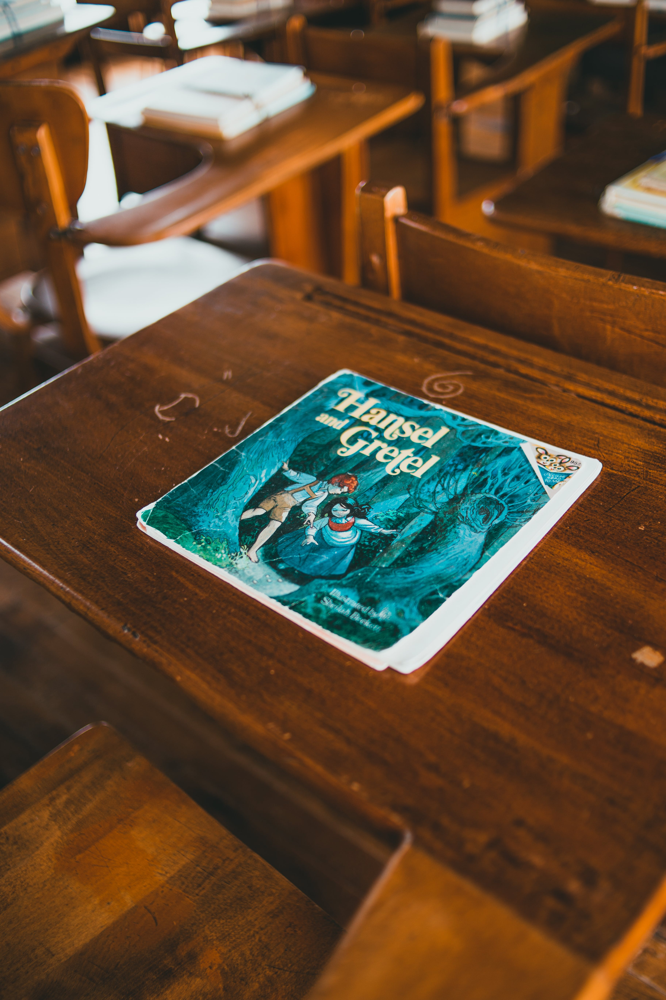

Extend Yourself - Skoog: Create a Sound Story
 Add Pictures
Add Pictures
You already have a story and sound effects, now add pictures to it. How does adding pictures change your story? Does it make it more entertaining? Easier to understand?
Write or Choose Another Story
Try to use the same sound effects with a different story that you write. How can you change the way that they work within the story? Is there one that you prefer over the other?
Tell a Fairy Tale with Sound
Think of popular fairy tales that you know. A couple of examples could be: The Three Little Pigs, Goldilocks and The Three Bears, Little Red Riding Hood, etc. Think about how you could tell this story using only sound effects and no words. How could you use sound to represent the characters? The action? Play your story for a classmate and see if they can guess it!
